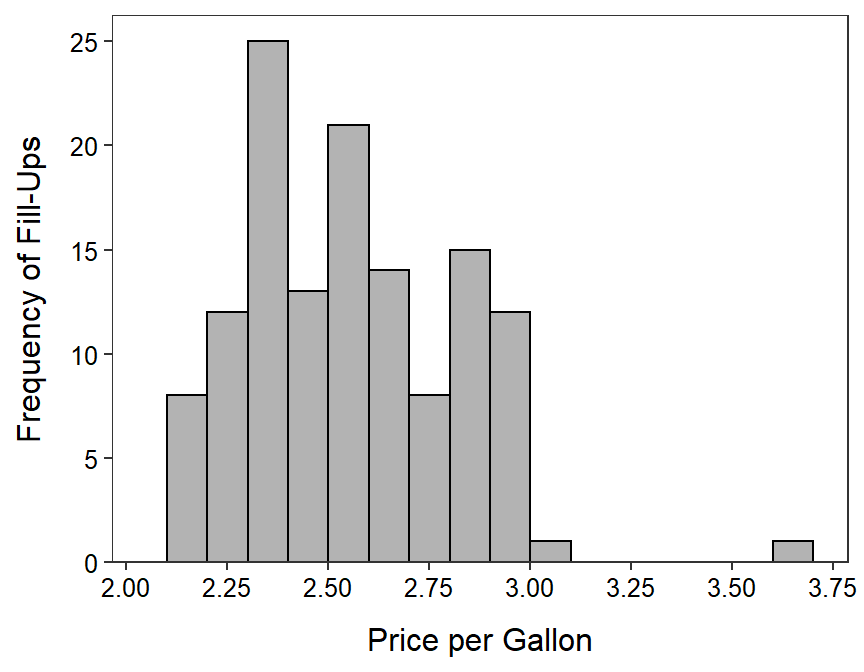

Personal Gas Purchases I

I have recorded data for every tank of gas that I have put into the truck that I bought in 2018. In the figure and table below I summarize the miles-per-gallon for each tank of gas. Use these results to perform a univariate EDA.
n mean sd min Q1 median Q3 max
130.00 19.35 2.09 12.69 18.33 19.73 20.76 23.68
Personal Gas Purchases II
The graph and table below show the price per gallon each time I filled the tank. Use the results to perform a univariate EDA.

n mean sd min Q1 median Q3 max
130.000 2.569 0.263 2.109 2.349 2.539 2.799 3.609
Personal Gas Purchases II
Finally, the graph below shows the frequency and the table below shows the percentage of towns in which I bought each tank of gas. Use these results to perform a univariate EDA.

town2
Ashland Iron River Washburn Superior Other
66.9 20.0 6.2 1.5 5.4